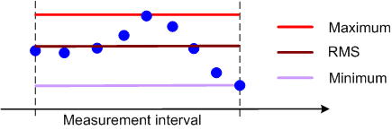

Detectors
The detector setting specifies how a single measurement result is calculated from a set of adjacent measurement points:
- "RMS": The displayed result represents the RMS average (e.g. the mean power) in a specified measurement interval. Over-estimation of stochastic signals (noise) is avoided.
- "Minimum": The displayed result represents the minimum value in a specified measurement interval. Narrow peaks cannot be smoothed out due to averaging.
- "Maximum": The displayed result represents the maximum value in a specified measurement interval.

Detector type
The measurement interval varies from one measurement to another; it is typically a particular time or frequency interval.
Detector and statistics type settings can be combined. Examples:
- Statistics type "Current", detector "RMS":
The current trace, calculated from RMS-averaged values over the specified "Measurement Length". - Statistics type "Current", detector "Minimum":
The current trace, calculated from minimum values within the "Measurement Length". - Statistics type "Current", detector "Maximum":
The current trace, calculated from maximum values within the "Measurement Length". - Statistics type "Average", detector "RMS":
The average trace, calculated from RMS-averaged values over the "Measurement Length". - Statistics type "Minimum", detector "Minimum":
The minimum trace, calculated from minimum values within the "Measurement Length". - Statistics type "Maximum", detector "Maximum":
The maximum trace, calculated from maximum values within the "Measurement Length".